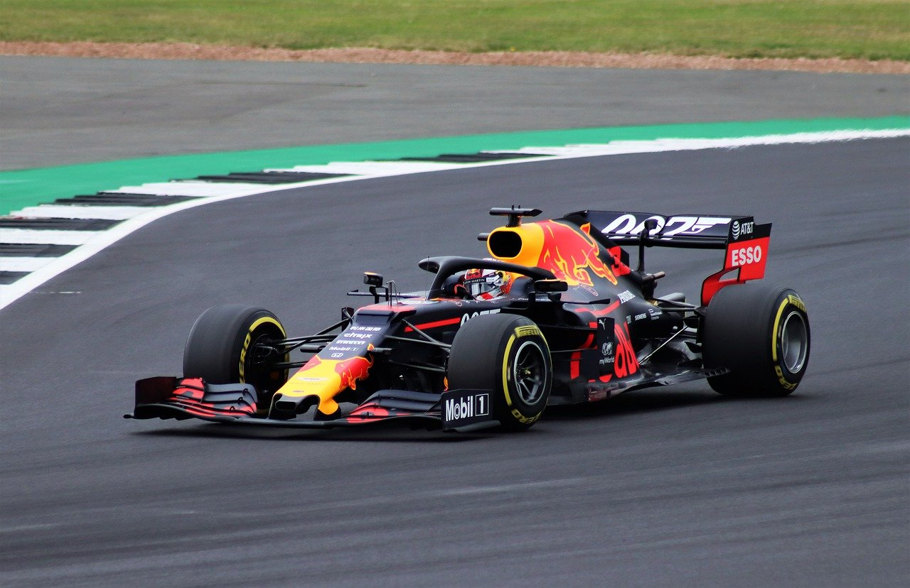

Max Verstappen |
||||||||||||||||||||||||||||||||
|---|---|---|---|---|---|---|---|---|---|---|---|---|---|---|---|---|---|---|---|---|---|---|---|---|---|---|---|---|---|---|---|---|
BiografíaMax Verstappen es un corredor holandés de la Fórmula 1, nacido en 1997, hijo del excorredor Jos Verstappen. | Max comenzó su vida automovilística con tan solo 7 años, y ya se notaba que era bueno. En 2010 quedó segundo en un mundial de karting internacional. Fue consiguinedo más títulos a lo largo de los años, hasta que entró en la formula 3 en 2014 con el equipo Van Amersfoort Racing. Cogió tanta fama que al año siguiente en 2015 entró en la Fórmula 1 con la escuderia de Toro Rosso, no fue su mejor año en cuanto a premios, de hecho quedó por debajo de la mitad en la clasificacón.
| 
| Al año siguiente fue fichado por Redbull y desde entonces no ha cambiado de equipo.
Los dos primeros años consguión quedar en 6ºy 5º puesto en la clasificación. Los dos años siguientes quedo 3º dos veces seguidas. Y este último año tras una reñida batalla en Hamilton y Verstappen, los cuales se jugaron el primer puesto en el último gran premio de la temporada en Abu Dabi, salió vencedor Max Verstappen tras una larga y disputada carrera. No solo ganó esa carrera sino que ganó el mundial también. Así derrocó el monopolio de Hamilton y Mercedes los cuales llevaban varios años seguidos ganando.
| Logros importantes de Max Verstappen
Max Verstappen, a su temprana edad ya ha conseguido quedar primero en un mundial, y cuenta con una suma de 59 podios los cuales
20 son victorias.
| | Highligths | ||||||||||||||||||||||||||